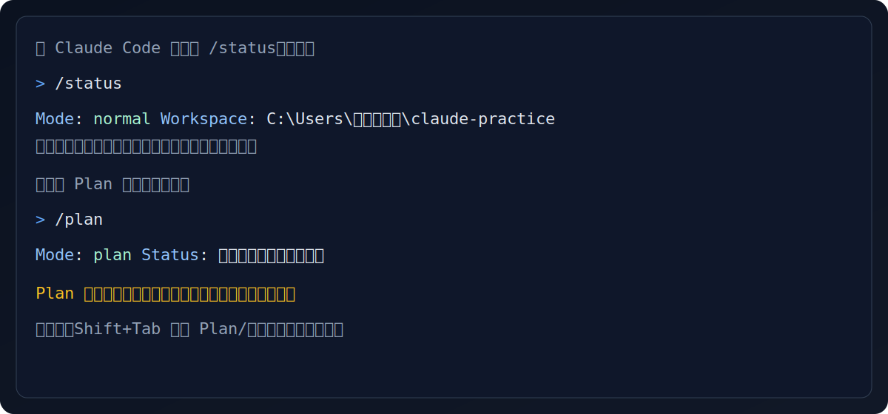

Claude Code CLI 启动后会扫描代码库并理解项目结构
📌 章节说明
前置知识：已完成第01章环境安装，能够启动 Claude Code。
本章价值：了解 Claude Code 的各种命令和模式，让你能更好地控制 AI 的行为和权限。
背景知识：为什么要了解这些命令？
不会用命令 = 只能听 Claude 的
会用命令 = 你是主导，Claude 是助手
比如：
- 只读模式：让 Claude 只能看，不能改
- 危险模式：允许批量修改文件
- Plan 模式：先看方案再决定是否执行
| 概念 | 说明 | 重要性 |
|---|---|---|
| 启动方式 | 如何启动 Claude Code | ⭐⭐⭐ |
| 工作模式 | Plan/Edit/Dangerous 三种模式 | ⭐⭐⭐ |
| 权限控制 | 能访问哪些文件 | ⭐⭐⭐ |
一、启动 Claude Code
基本启动
bash
# 在当前目录启动
claude
# 在指定目录启动
claude /path/to/folder
# Windows 示例
claude E:\我的项目
# Mac/Linux 示例
claude ~/projects/my-project常用启动参数
| 参数 | 作用 |
|---|---|
--help |
查看帮助信息 |
--version |
查看版本号 |
--read-only |
只读模式启动 |
--dangerous |
危险模式启动 |
--codex |
Codex 模式启动（进阶） |
二、三种工作模式
Claude Code 有三种工作模式，了解它们的区别非常重要：
2.1 普通模式（默认）
这是最常用的模式，适合日常使用。
| ✓ | 修改文件前会询问你 |
| ✓ | 不能执行危险操作 |
| ✓ | 只能操作工作区内的文件 |
| ✗ | 不能删除文件 |
| ✗ | 不能访问工作区外的文件 |
适用场景：
- 日常开发工作
- 修改少量文件
- 学习和探索
2.2 Plan 模式（计划模式）
bash
claude
/plan| ✓ | 只分析不执行 |
| ✓ | 给出方案让你确认 |
| ✓ | 适合复杂任务 |
| ✗ | 不会直接修改文件 |
适用场景：
- 代码审查
- 重构规划
- 分析项目结构
2.3 Dangerous 模式（危险模式）
bash
claude --dangerous| ✓ | 可以删除文件 |
| ✓ | 可以覆盖文件 |
| ✓ | 可以批量修改 |
| ⚠️ | 要小心使用！ |
适用场景：
- 自动化脚本
- 批量重命名文件
- 大规模重构
⚠️ 警告
危险模式下，Claude 可以直接删除文件，请务必谨慎！
三、权限控制
权限控制决定了 Claude Code 能访问哪些文件。
3.1 文件夹权限（默认/推荐）
bash
claude ~/my-project✅ 能读写 my-project 里的文件
❌ 不能访问外面的文件
这是最安全的用法！推荐日常使用
3.2 系统级权限（谨慎使用）
bash
claude --allow-system-wide✅ 能访问整个系统的文件
⚠️ 仅在需要时使用
适用场景：跨项目操作、系统级文件整理
3.3 只读权限（安全学习）
bash
claude --read-only ~/project✅ 只能看文件
❌ 不能修改任何文件
适用场景：学习理解代码、代码审查、查看项目结构
四、斜杠命令（/）
斜杠命令是 Claude Code 的快捷命令，输入后按回车执行。
4.1 对话管理
| 命令 | 功能 | 示例 |
|---|---|---|
/new |
新建对话 | 开始一个全新的对话 |
/clear |
清空对话历史 | 清除当前对话的所有记录 |
/history |
查看历史记录 | 查看之前的对话 |
/exit |
退出 Claude Code | 关闭程序 |
4.2 模式切换
| 命令 | 功能 | 说明 |
|---|---|---|
/plan |
进入 Plan 模式 | 只分析不执行 |
/edit |
进入编辑模式 | 可以修改文件 |
/read-only |
切换只读模式 | 不能修改文件 |
/dangerous |
切换危险模式 | 允许危险操作 |
4.3 帮助与状态
| 命令 | 功能 |
|---|---|
/help |
显示帮助信息 |
/status |
查看当前状态 |
/config |
查看配置信息 |
五、权限决策树
你要做什么？
│
├─ 只是看看/学习
│ → claude --read-only
│ 最安全，完全不会修改文件
│
├─ 修改自己的文件
│ → claude （默认）
│ 最常用，安全且有保护
│
├─ 修改很多文件/批量操作
│ → claude --dangerous
│ 方便但危险，要有备份
│
└─ 需要操作多个文件夹
→ claude --allow-system-wide
权限很大，谨慎使用
六、实用场景
场景1：安全查看项目
bash
claude --read-only ~/project用途：只是想看看项目，不想改任何东西
好处：完全安全，不会误删文件
场景2：批量修改文件
bash
claude --dangerous ~/project然后告诉 Claude：
把所有 .txt 文件里的 "hello" 改成 "hi"
注意：危险模式下会直接修改，请确保你有备份！
场景3：规划重构
bash
claude
/plan然后输入：
> 帮我规划一下如何重构这个项目
优点：Claude 会给出详细方案，让你确认后再执行
场景4：学习别人的代码
当你下载了一个开源项目，想学习它是怎么工作的：
bash
claude --read-only ~/downloads/some-project然后可以问 Claude：
> 请帮我理解这个项目：
1. 这个项目是做什么的？
2. 主要的文件结构是怎样的？
3. 我应该从哪个文件开始看起？
场景5：跨文件夹操作
当你需要同时操作多个文件夹时：
bash
claude --allow-system-wide注意：系统级权限要谨慎使用！只在确实需要时才开启。
场景6：中途切换模式
你已经启动了 Claude，但想换模式：
| 当前状态 | 想切换到 | 命令 |
|---|---|---|
| 普通模式 | 只读模式 | /read-only |
| 普通模式 | 危险模式 | /dangerous |
| 只读/危险 | 普通模式 | /edit |
| 任意模式 | Plan 模式 | /plan |
命令速查表
| 操作 | 命令 |
|---|---|
| 启动（当前目录） | claude |
| 启动（指定目录） | claude /path/to/dir |
| 只读模式 | claude --read-only |
| 危险模式 | claude --dangerous |
| Codex 模式 | claude --codex |
| 新建对话 | /new |
| Plan 模式 | /plan |
| 清空对话 | /clear |
| 退出 | /exit |
| 查看帮助 | /help |
常见问题
Q1: 我不知道当前是什么模式？
输入 /status 查看当前状态。

新手最常用：先 /status 看清楚自己在哪个模式（示意图）
Q2: Dangerous 模式会删除我的文件吗？
会！这就是为什么它叫"危险模式"。只有在以下情况才用：
- 你有备份
- 你明确知道要做什么
- 需要批量操作
Q3: 只读模式有什么用？
当你只是想：
- 理解一个项目
- 查看代码结构
- 让 AI 解释代码
这时候用只读模式最安全，完全不用担心文件被改。
本章自检（3分钟）
点开问题查看答案，能讲清楚就算掌握。
Plan 模式和危险模式分别适合什么场景？
/plan 适合先出方案再确认（复杂任务/分析）；--dangerous 适合批量改动，但风险高，务必先备份或 Git 存档。怎么知道自己当前处于什么模式？
在 Claude Code 里输入
/status 查看当前状态。新手学习阶段最推荐的权限是什么？
优先用
--read-only 或默认文件夹权限（只在自己的项目目录里运行），避免系统级权限。--allow-system-wide 意味着什么？
允许访问更大范围的文件（权限很大），仅在确实需要跨目录操作时使用，并保持谨慎。